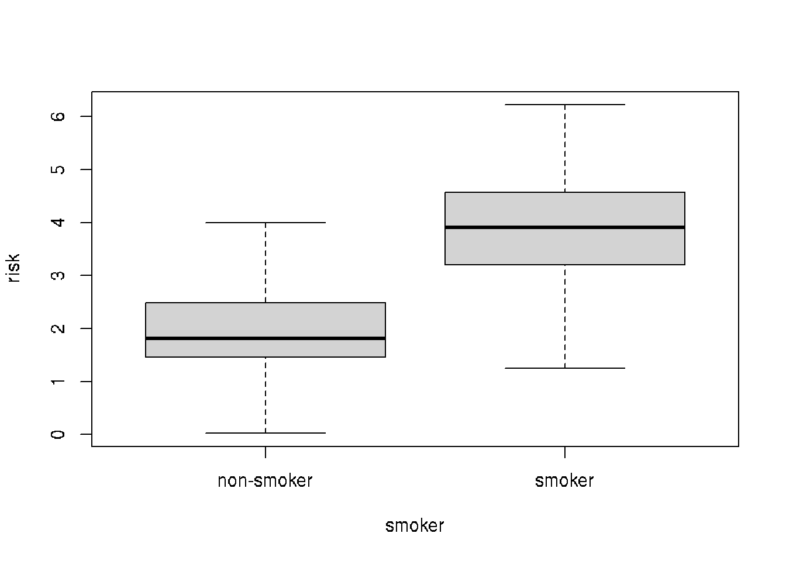

options(width=60)11 Data Frames
While R has many different data types, the one that is central to much of the power and popularity of R is the data.frame. A data.frame looks a bit like an R matrix in that it has two dimensions, rows and columns. However, data.frames are usually viewed as a set of columns representing variables and the rows representing the values of those variables. Importantly, a data.frame may contain different data types in each of its columns; matrices must contain only one data type. This distinction is important to remember, as there are specific approaches to working with R data.frames that may be different than those for working with matrices.
11.1 Learning goals
- Understand how data.frames are different from matrices.
- Know a few functions for examing the contents of a data.frame.
- List approaches for subsetting data.frames.
- Be able to load and save tabular data from and to disk.
- Show how to create a data.frames from scratch.
11.2 Learning objectives
- Load the yeast growth dataset into R using
read.csv. - Examine the contents of the dataset.
- Use subsetting to find genes that may be involved with nutrient metabolism and transport.
- Summarize data measurements by categories.
11.3 Dataset
The data used here are borrowed directly from the fantastic Bioconnector tutorials and are a cleaned up version of the data from Brauer et al. Coordination of Growth Rate, Cell Cycle, Stress Response, and Metabolic Activity in Yeast (2008) Mol Biol Cell 19:352-367. These data are from a gene expression microarray, and in this paper the authors examine the relationship between growth rate and gene expression in yeast cultures limited by one of six different nutrients (glucose, leucine, ammonium, sulfate, phosphate, uracil). If you give yeast a rich media loaded with nutrients except restrict the supply of a single nutrient, you can control the growth rate to any rate you choose. By starving yeast of specific nutrients you can find genes that:
- Raise or lower their expression in response to growth rate. Growth-rate dependent expression patterns can tell us a lot about cell cycle control, and how the cell responds to stress. The authors found that expression of >25% of all yeast genes is linearly correlated with growth rate, independent of the limiting nutrient. They also found that the subset of negatively growth-correlated genes is enriched for peroxisomal functions, and positively correlated genes mainly encode ribosomal functions.
- Respond differently when different nutrients are being limited. If you see particular genes that respond very differently when a nutrient is sharply restricted, these genes might be involved in the transport or metabolism of that specific nutrient.
The dataset can be downloaded directly from:
We are going to read this dataset into R and then use it as a playground for learning about data.frames.
11.4 Reading in data
R has many capabilities for reading in data. Many of the functions have names that help us to understand what data format is to be expected. In this case, the filename that we want to read ends in .csv, meaning comma-separated-values. The read.csv() function reads in .csv files. As usual, it is worth reading help('read.csv') to get a better sense of the possible bells-and-whistles.
The read.csv() function can read directly from a URL, so we do not need to download the file directly. This dataset is relatively large (about 16MB), so this may take a bit depending on your network connection speed.
url = paste0(
'https://raw.githubusercontent.com',
'/bioconnector/workshops/master/data/brauer2007_tidy.csv'
)
ydat <- read.csv(url)Our variable, ydat, now “contains” the downloaded and read data. We can check to see what data type read.csv gave us:
class(ydat)[1] "data.frame"11.5 Inspecting data.frames
Our ydat variable is a data.frame. As I mentioned, the dataset is fairly large, so we will not be able to look at it all at once on the screen. However, R gives us many tools to inspect a data.frame.
- Overviews of content
head()to show first few rowstail()to show last few rows
- Size
dim()for dimensions (rows, columns)nrow()ncol()object.size()for power users interested in the memory used to store an object
- Data and attribute summaries
colnames()to get the names of the columnsrownames()to get the “names” of the rows–may not be presentsummary()to get per-column summaries of the data in the data.frame.
head(ydat) symbol systematic_name nutrient rate expression
1 SFB2 YNL049C Glucose 0.05 -0.24
2 <NA> YNL095C Glucose 0.05 0.28
3 QRI7 YDL104C Glucose 0.05 -0.02
4 CFT2 YLR115W Glucose 0.05 -0.33
5 SSO2 YMR183C Glucose 0.05 0.05
6 PSP2 YML017W Glucose 0.05 -0.69
bp
1 ER to Golgi transport
2 biological process unknown
3 proteolysis and peptidolysis
4 mRNA polyadenylylation*
5 vesicle fusion*
6 biological process unknown
mf
1 molecular function unknown
2 molecular function unknown
3 metalloendopeptidase activity
4 RNA binding
5 t-SNARE activity
6 molecular function unknowntail(ydat) symbol systematic_name nutrient rate expression
198425 DOA1 YKL213C Uracil 0.3 0.14
198426 KRE1 YNL322C Uracil 0.3 0.28
198427 MTL1 YGR023W Uracil 0.3 0.27
198428 KRE9 YJL174W Uracil 0.3 0.43
198429 UTH1 YKR042W Uracil 0.3 0.19
198430 <NA> YOL111C Uracil 0.3 0.04
bp
198425 ubiquitin-dependent protein catabolism*
198426 cell wall organization and biogenesis
198427 cell wall organization and biogenesis
198428 cell wall organization and biogenesis*
198429 mitochondrion organization and biogenesis*
198430 biological process unknown
mf
198425 molecular function unknown
198426 structural constituent of cell wall
198427 molecular function unknown
198428 molecular function unknown
198429 molecular function unknown
198430 molecular function unknowndim(ydat)[1] 198430 7nrow(ydat)[1] 198430ncol(ydat)[1] 7colnames(ydat)[1] "symbol" "systematic_name" "nutrient"
[4] "rate" "expression" "bp"
[7] "mf" summary(ydat) symbol systematic_name nutrient
Length:198430 Length:198430 Length:198430
Class :character Class :character Class :character
Mode :character Mode :character Mode :character
rate expression bp
Min. :0.0500 Min. :-6.500000 Length:198430
1st Qu.:0.1000 1st Qu.:-0.290000 Class :character
Median :0.2000 Median : 0.000000 Mode :character
Mean :0.1752 Mean : 0.003367
3rd Qu.:0.2500 3rd Qu.: 0.290000
Max. :0.3000 Max. : 6.640000
mf
Length:198430
Class :character
Mode :character
In RStudio, there is an additional function, View() (note the capital “V”) that opens the first 1000 rows (default) in the RStudio window, akin to a spreadsheet view.
View(ydat)11.6 Accessing variables (columns) and subsetting
In R, data.frames can be subset similarly to other two-dimensional data structures. The [ in R is used to denote subsetting of any kind. When working with two-dimensional data, we need two values inside the [ ] to specify the details. The specification is [rows, columns]. For example, to get the first three rows of ydat, use:
ydat[1:3, ] symbol systematic_name nutrient rate expression
1 SFB2 YNL049C Glucose 0.05 -0.24
2 <NA> YNL095C Glucose 0.05 0.28
3 QRI7 YDL104C Glucose 0.05 -0.02
bp
1 ER to Golgi transport
2 biological process unknown
3 proteolysis and peptidolysis
mf
1 molecular function unknown
2 molecular function unknown
3 metalloendopeptidase activityNote how the second number, the columns, is blank. R takes that to mean “all the columns”. Similarly, we can combine rows and columns specification arbitrarily.
ydat[1:3, 1:3] symbol systematic_name nutrient
1 SFB2 YNL049C Glucose
2 <NA> YNL095C Glucose
3 QRI7 YDL104C GlucoseBecause selecting a single variable, or column, is such a common operation, there are two shortcuts for doing so with data.frames. The first, the $ operator works like so:
# Look at the column names, just to refresh memory
colnames(ydat)[1] "symbol" "systematic_name" "nutrient"
[4] "rate" "expression" "bp"
[7] "mf" # Note that I am using "head" here to limit the output
head(ydat$symbol)[1] "SFB2" NA "QRI7" "CFT2" "SSO2" "PSP2"# What is the actual length of "symbol"?
length(ydat$symbol)[1] 198430The second is related to the fact that, in R, data.frames are also lists. We subset a list by using [[]] notation. To get the second column of ydat, we can use:
head(ydat[[2]])[1] "YNL049C" "YNL095C" "YDL104C" "YLR115W" "YMR183C"
[6] "YML017W"Alternatively, we can use the column name:
head(ydat[["systematic_name"]])[1] "YNL049C" "YNL095C" "YDL104C" "YLR115W" "YMR183C"
[6] "YML017W"11.6.1 Some data exploration
There are a couple of columns that include numeric values. Which columns are numeric?
class(ydat$symbol)[1] "character"class(ydat$rate)[1] "numeric"class(ydat$expression)[1] "numeric"Make histograms of: - the expression values - the rate values
What does the table() function do? Could you use that to look a the rate column given that that column appears to have repeated values?
What rate corresponds to the most nutrient-starved condition?
11.6.2 More advanced indexing and subsetting
We can use, for example, logical values (TRUE/FALSE) to subset data.frames.
head(ydat[ydat$symbol == 'LEU1', ]) symbol systematic_name nutrient rate expression bp
NA <NA> <NA> <NA> NA NA <NA>
NA.1 <NA> <NA> <NA> NA NA <NA>
NA.2 <NA> <NA> <NA> NA NA <NA>
NA.3 <NA> <NA> <NA> NA NA <NA>
NA.4 <NA> <NA> <NA> NA NA <NA>
NA.5 <NA> <NA> <NA> NA NA <NA>
mf
NA <NA>
NA.1 <NA>
NA.2 <NA>
NA.3 <NA>
NA.4 <NA>
NA.5 <NA>tail(ydat[ydat$symbol == 'LEU1', ]) symbol systematic_name nutrient rate expression
NA.47244 <NA> <NA> <NA> NA NA
NA.47245 <NA> <NA> <NA> NA NA
NA.47246 <NA> <NA> <NA> NA NA
NA.47247 <NA> <NA> <NA> NA NA
NA.47248 <NA> <NA> <NA> NA NA
NA.47249 <NA> <NA> <NA> NA NA
bp mf
NA.47244 <NA> <NA>
NA.47245 <NA> <NA>
NA.47246 <NA> <NA>
NA.47247 <NA> <NA>
NA.47248 <NA> <NA>
NA.47249 <NA> <NA>What is the problem with this approach? It appears that there are a bunch of NA values. Taking a quick look at the symbol column, we see what the problem.
summary(ydat$symbol) Length Class Mode
198430 character character Using the is.na() function, we can make filter further to get down to values of interest.
head(ydat[ydat$symbol == 'LEU1' & !is.na(ydat$symbol), ]) symbol systematic_name nutrient rate expression
1526 LEU1 YGL009C Glucose 0.05 -1.12
7043 LEU1 YGL009C Glucose 0.10 -0.77
12555 LEU1 YGL009C Glucose 0.15 -0.67
18071 LEU1 YGL009C Glucose 0.20 -0.59
23603 LEU1 YGL009C Glucose 0.25 -0.20
29136 LEU1 YGL009C Glucose 0.30 0.03
bp
1526 leucine biosynthesis
7043 leucine biosynthesis
12555 leucine biosynthesis
18071 leucine biosynthesis
23603 leucine biosynthesis
29136 leucine biosynthesis
mf
1526 3-isopropylmalate dehydratase activity
7043 3-isopropylmalate dehydratase activity
12555 3-isopropylmalate dehydratase activity
18071 3-isopropylmalate dehydratase activity
23603 3-isopropylmalate dehydratase activity
29136 3-isopropylmalate dehydratase activitySometimes, looking at the data themselves is not that important. Using dim() is one possibility to look at the number of rows and columns after subsetting.
dim(ydat[ydat$expression > 3, ])[1] 714 7Find the high expressed genes when leucine-starved. For this task we can also use subset which allows us to treat column names as R variables (no $ needed).
subset(ydat, nutrient == 'Leucine' & rate == 0.05 & expression > 3) symbol systematic_name nutrient rate expression
133768 QDR2 YIL121W Leucine 0.05 4.61
133772 LEU1 YGL009C Leucine 0.05 3.84
133858 BAP3 YDR046C Leucine 0.05 4.29
135186 <NA> YPL033C Leucine 0.05 3.43
135187 <NA> YLR267W Leucine 0.05 3.23
135288 HXT3 YDR345C Leucine 0.05 5.16
135963 TPO2 YGR138C Leucine 0.05 3.75
135965 YRO2 YBR054W Leucine 0.05 4.40
136102 GPG1 YGL121C Leucine 0.05 3.08
136109 HSP42 YDR171W Leucine 0.05 3.07
136119 HXT5 YHR096C Leucine 0.05 4.90
136151 <NA> YJL144W Leucine 0.05 3.06
136152 MOH1 YBL049W Leucine 0.05 3.43
136153 <NA> YBL048W Leucine 0.05 3.95
136189 HSP26 YBR072W Leucine 0.05 4.86
136231 NCA3 YJL116C Leucine 0.05 4.03
136233 <NA> YBR116C Leucine 0.05 3.28
136486 <NA> YGR043C Leucine 0.05 3.07
137443 ADH2 YMR303C Leucine 0.05 4.15
137448 ICL1 YER065C Leucine 0.05 3.54
137451 SFC1 YJR095W Leucine 0.05 3.72
137569 MLS1 YNL117W Leucine 0.05 3.76
bp
133768 multidrug transport
133772 leucine biosynthesis
133858 amino acid transport
135186 meiosis*
135187 biological process unknown
135288 hexose transport
135963 polyamine transport
135965 biological process unknown
136102 signal transduction
136109 response to stress*
136119 hexose transport
136151 response to dessication
136152 biological process unknown
136153 <NA>
136189 response to stress*
136231 mitochondrion organization and biogenesis
136233 <NA>
136486 biological process unknown
137443 fermentation*
137448 glyoxylate cycle
137451 fumarate transport*
137569 glyoxylate cycle
mf
133768 multidrug efflux pump activity
133772 3-isopropylmalate dehydratase activity
133858 amino acid transporter activity
135186 molecular function unknown
135187 molecular function unknown
135288 glucose transporter activity*
135963 spermine transporter activity
135965 molecular function unknown
136102 signal transducer activity
136109 unfolded protein binding
136119 glucose transporter activity*
136151 molecular function unknown
136152 molecular function unknown
136153 <NA>
136189 unfolded protein binding
136231 molecular function unknown
136233 <NA>
136486 transaldolase activity
137443 alcohol dehydrogenase activity
137448 isocitrate lyase activity
137451 succinate:fumarate antiporter activity
137569 malate synthase activity11.7 Aggregating data
Aggregating data, or summarizing by category, is a common way to look for trends or differences in measurements between categories. Use aggregate to find the mean expression by gene symbol.
head(aggregate(ydat$expression, by=list( ydat$symbol), mean)) Group.1 x
1 AAC1 0.52888889
2 AAC3 -0.21628571
3 AAD10 0.43833333
4 AAD14 -0.07166667
5 AAD16 0.24194444
6 AAD4 -0.79166667# or
head(aggregate(expression ~ symbol, mean, data=ydat)) symbol expression
1 AAC1 0.52888889
2 AAC3 -0.21628571
3 AAD10 0.43833333
4 AAD14 -0.07166667
5 AAD16 0.24194444
6 AAD4 -0.7916666711.8 Creating a data.frame from scratch
Sometimes it is useful to combine related data into one object. For example, let’s simulate some data.
smoker = factor(rep(c("smoker", "non-smoker"), each=50))
smoker_numeric = as.numeric(smoker)
x = rnorm(100)
risk = x + 2*smoker_numericWe have two varibles, risk and smoker that are related. We can make a data.frame out of them:
smoker_risk = data.frame(smoker = smoker, risk = risk)
head(smoker_risk) smoker risk
1 smoker 3.494214
2 smoker 3.841851
3 smoker 3.607017
4 smoker 4.449390
5 smoker 3.896246
6 smoker 5.712052R also has plotting shortcuts that work with data.frames to simplify plotting
plot( risk ~ smoker, data=smoker_risk)
11.9 Saving a data.frame
Once we have a data.frame of interest, we may want to save it. The most portable way to save a data.frame is to use one of the write functions. In this case, let’s save the data as a .csv file.
write.csv(smoker_risk, "smoker_risk.csv")